首页 / 家具
家具
表格筛选：点击下面的按钮筛选（每组只能选一个，选了以后同组其它选项变灰；再点一次取消，点「全部」恢复），也可在搜索框里输入关键字：
搜索：清空
分类：全部起居功能家具硬装装饰物绿植户外布设其他
套组：全部潮间曲野风蒲草听丰年牧流云向日葵暖家假日灿烂星小雏菊红伞之森星空街泊光萤雪岩桃林侠风果果乐不知寒梅绒绒雪丘麦田拾穗花叶拼布凉草毛绒天空街巷石园裁荷得闲小卖部阅读室画室街头绿茵球场沐芒施工现场超市温室朝芒花野栖居露芽星毛绒偶憩落日原绵朵莉手作玩偶铺千珀航路指示
| 图标 | 家具名称 | 分类 | 套组 |
|---|---|---|---|
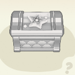 | 潮间曲珍珠箱 | 起居 | 潮间曲 |
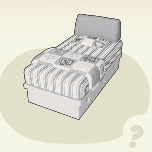 | 野风床 | 起居 | 野风蒲草 |
| 听丰年竹果床 | 起居 | 听丰年 | |
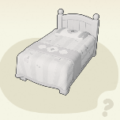 | 新生活甜果小床 | 起居 | |
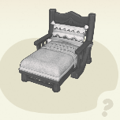 | 牧流云躺椅 | 起居 | 牧流云 |
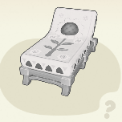 | 向日葵躺椅 | 起居 | 向日葵 |
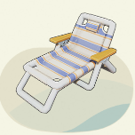 | 条纹沙滩躺椅 | 起居 | |
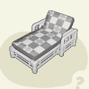 | 柚木庭院躺椅 | 起居 | |
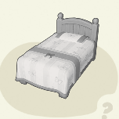 | 新生活蝶映小床 | 起居 | |
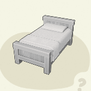 | 暖黄小床 | 起居 | 暖家 |
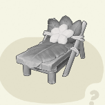 | 假日躺椅 | 起居 | 假日 |
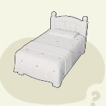 | 新生活花意小床 | 起居 | |
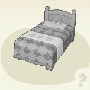 | 新生活绿蓑小床 | 起居 | |
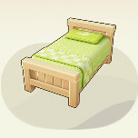 | 新生活薄荷小床 | 起居 | |
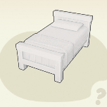 | 新生活橘黄小床 | 起居 | |
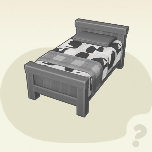 | 新生活墨灰小床 | 起居 | |
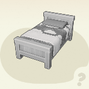 | 新生活天蓝小床 | 起居 | |
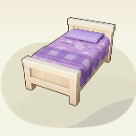 | 新生活藤紫小床 | 起居 | |
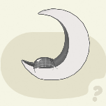 | 灿烂月亮椅 | 起居 | 灿烂星 |
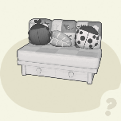 | 野风沙发 | 起居 | 野风蒲草 |
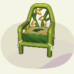 | 听丰年竹椅 | 起居 | 听丰年 |
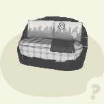 | 蓝色矿脉沙发 | 起居 | |
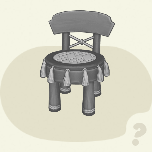 | 牧流云圆椅 | 起居 | 牧流云 |
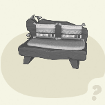 | 草野小花沙发 | 起居 | |
| 月球背面球形椅 | 起居 | ||
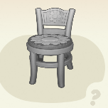 | 小雏菊花垫椅 | 起居 | 小雏菊 |
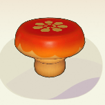 | 红伞之森圆凳 | 起居 | 红伞之森 |
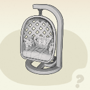 | 向日葵编织吊椅 | 起居 | 向日葵 |
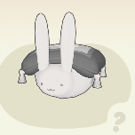 | 星空街单人椅 | 起居 | 星空街 |
| 泊光巡查椅 | 起居 | 泊光 | |
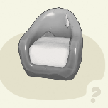 | 萤雪岩沙发 | 起居 | 萤雪岩 |
| “庆祝开业”沙发 | 起居 | ||
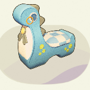 | “博古通今”椅 | 起居 | |
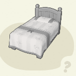 | 岁岁团圆椅 | 起居 | |
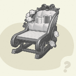 | 花栖礼盒雪橇 | 起居 | |
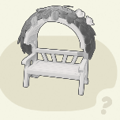 | 花栖秘境双人椅 | 起居 | |
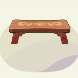 | 桃林侠风长凳 | 起居 | 桃林侠风 |
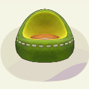 | 果果乐沙发 | 起居 | 果果乐 |
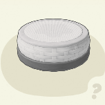 | 不知寒梅蒲团 | 起居 | 不知寒梅 |
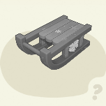 | 绒绒雪橇椅 | 起居 | 绒绒雪丘 |
| 羽栖吊椅 | 起居 | ||
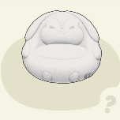 | 粉兔懒人沙发 | 起居 | |
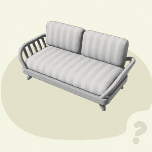 | 青白条纹木沙发 | 起居 | |
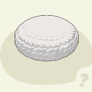 | 简单藤编蒲团 | 起居 | |
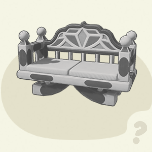 | 粉绘沙发长椅 | 起居 | |
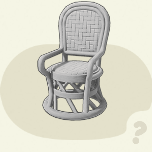 | 藤编扶手椅 | 起居 | |
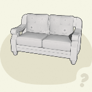 | 葵煦双人沙发 | 起居 | |
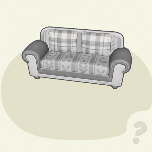 | 碎绿布艺沙发 | 起居 | |
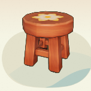 | 印花小圆凳 | 起居 | |
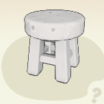 | 碎花小圆凳 | 起居 | |
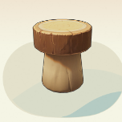 | 菇木小圆凳 | 起居 | |
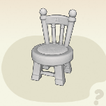 | 春日盛放圆椅 | 起居 | |
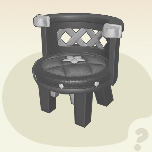 | 初夏香氛圆椅 | 起居 | |
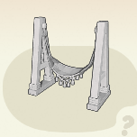 | 拾穗黄昏秋千 | 起居 | 麦田拾穗 |
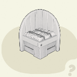 | 拾穗椅 | 起居 | 麦田拾穗 |
| 拾穗长椅 | 起居 | 麦田拾穗 | |
| 银杏叶长椅 | 起居 | ||
| 暖黄方凳 | 起居 | 暖家 | |
| 暖黄木方椅 | 起居 | 暖家 | |
| 花叶拼布猫猫凳 | 起居 | 花叶拼布 | |
| 花叶拼布沙发 | 起居 | 花叶拼布 | |
| 花叶拼布沙发椅 | 起居 | 花叶拼布 | |
| 凉草双人沙发 | 起居 | 凉草 | |
| 凉草编织沙发 | 起居 | 凉草 | |
| 毛绒天空猫猫凳 | 起居 | 毛绒天空 | |
| 毛绒天空沙发 | 起居 | 毛绒天空 | |
| 童真玩偶凳 | 起居 | ||
| 街巷铁艺长椅 | 起居 | 街巷 | |
| 石园普通石凳 | 起居 | 石园 | |
| 石园双人长凳 | 起居 | 石园 | |
| 载荷长沙发 | 起居 | 裁荷 | |
| 载荷长凳 | 起居 | 裁荷 | |
| 灿烂星双人椅 | 起居 | 灿烂星 | |
| 灿烂星露营椅 | 起居 | 灿烂星 | |
| 得闲竹椅 | 起居 | 得闲 | |
| 小卖部矮凳 | 起居 | 小卖部 | |
| 阅读室休闲椅 | 起居 | 阅读室 | |
| 画室布椅 | 起居 | 画室 | |
| 街头公共座椅 | 起居 | 街头 | |
| 绿茵球场替补席 | 起居 | 绿茵球场 | |
| 布艺小方凳 | 起居 | ||
| 黄色单人沙发 | 起居 | ||
| 公园长凳 | 起居 | ||
| 小熊猫软垫椅 | 起居 | ||
| 红橡木软垫单人椅 | 起居 | ||
| 映央扶手椅 | 起居 | ||
| 映央小圆椅 | 起居 | ||
| 新生活橘黄方凳 | 起居 | ||
| 新生活墨灰方凳 | 起居 | ||
| 新生活天蓝方凳 | 起居 | ||
| 新生活藤紫方凳 | 起居 | ||
| 新生活薄荷方凳 | 起居 | ||
| 街角候车亭 | 起居 | ||
| 街巷铁艺椅 | 起居 | 街巷 | |
| 白色铁艺街心椅 | 起居 | ||
| 小雏菊壁挂花架 | 起居 | 小雏菊 | |
| 小雏菊落地花架 | 起居 | 小雏菊 | |
| 红伞之森壁挂架 | 起居 | 红伞之森 | |
| 红伞之森装饰架 | 起居 | 红伞之森 | |
| 月照仙鹤入画架 | 起居 | ||
| 传世武器架 | 起居 | ||
| 不知寒梅浴巾架 | 起居 | 不知寒梅 | |
| 十合一工具架 | 起居 | ||
| 古木绯花陈列架 | 起居 | ||
| 黄铜宝塔架 | 起居 | ||
| 博物学家书架 | 起居 | ||
| 沐芒置物架 | 起居 | 沐芒 | |
| 花叶拼布壁挂架 | 起居 | 花叶拼布 | |
| 凉草置物架 | 起居 | 凉草 | |
| 毛绒天空壁挂架 | 起居 | 毛绒天空 | |
| 载荷挂画架 | 起居 | 裁荷 | |
| 载荷置物架 | 起居 | 裁荷 | |
| 得闲赏荷挂画架 | 起居 | 得闲 | |
| 小卖部货摊 | 起居 | 小卖部 | |
| 小卖部零食架 | 起居 | 小卖部 | |
| 小卖部报刊架 | 起居 | 小卖部 | |
| 小卖部罐头架 | 起居 | 小卖部 | |
| 小卖部货架 | 起居 | 小卖部 | |
| 阅读室书架 | 起居 | 阅读室 | |
| 阅读室桌上书立 | 起居 | 阅读室 | |
| 画室收纳壁挂 | 起居 | 画室 | |
| 施工置物架 | 起居 | 施工现场 | |
| 超市货架 | 起居 | 超市 | |
| 温室置物架 | 起居 | 温室 | |
| 温室盆栽架 | 起居 | 温室 | |
| 果木壁挂置物架 | 起居 | ||
| 悠闲格子柜 | 起居 | ||
| 野风自然饲养柜 | 起居 | 野风蒲草 | |
| 晶石收藏柜 | 起居 | ||
| 小雏菊餐柜 | 起居 | 小雏菊 | |
| 红伞之森书柜 | 起居 | 红伞之森 | |
| 红伞之森厨台 | 起居 | 红伞之森 | |
| 泊光充能书柜 | 起居 | 泊光 | |
| 果果乐转角柜 | 起居 | 果果乐 | |
| 沉香木六斗柜 | 起居 | ||
| 宝相花绘矮柜 | 起居 | ||
| 暖雪书柜 | 起居 | ||
| 暖雪书籍 | 起居 | ||
| 可可饼干橱柜 | 起居 | ||
| 朝芒壁挂橱柜 | 起居 | 朝芒 | |
| 朝芒岛台 | 起居 | 朝芒 | |
| 双层芝士餐边柜 | 起居 | ||
| 朝芒备菜台 | 起居 | 朝芒 | |
| 午后棱角边柜 | 起居 | ||
| 田园郁金香橱柜 | 起居 | ||
| 沐芒长边柜 | 起居 | 沐芒 | |
| 沐芒镜柜 | 起居 | 沐芒 | |
| 暖黄木矮柜 | 起居 | 暖家 | |
| 凉草长矮柜 | 起居 | 凉草 | |
| 小卖部柜台 | 起居 | 小卖部 | |
| 小卖部转角柜台 | 起居 | 小卖部 | |
| 小卖部冰柜 | 起居 | 小卖部 | |
| 阅读室小书柜 | 起居 | 阅读室 | |
| 阅读室大书柜 | 起居 | 阅读室 | |
| 阅读室储物柜 | 起居 | 阅读室 | |
| 画室收纳小推车 | 起居 | 画室 | |
| 超市饮料柜 | 起居 | 超市 | |
| 超市柜台 | 起居 | 超市 | |
| 复古长条储物柜 | 起居 | ||
| 新生活深色矮柜 | 起居 | ||
| 粉白转角柜 | 起居 | ||
| 深水三角边柜 | 起居 | ||
| 暮粉几何边柜 | 起居 | ||
| 冷金大理石边柜 | 起居 | ||
| 新生活浅色矮柜 | 起居 | ||
| 新生活墨灰矮柜 | 起居 | ||
| 新生活天蓝矮柜 | 起居 | ||
| 新生活藤紫矮柜 | 起居 | ||
| 听丰年茶几 | 起居 | 听丰年 | |
| 冰川流云原石桌 | 起居 | ||
| 牧流云手工桌 | 起居 | 牧流云 | |
| 红伞之森大圆桌 | 起居 | 红伞之森 | |
| 向日葵茶几 | 起居 | 向日葵 | |
| 星空街展台 | 起居 | 星空街 | |
| 泊光巡查桌 | 起居 | 泊光 | |
| 岁岁团圆桌 | 起居 | ||
| 清新花意餐桌 | 起居 | ||
| 圆木展台 | 起居 | ||
| 不知寒梅案几 | 起居 | 不知寒梅 | |
| 古朴红木矮几 | 起居 | ||
| 古雅红木长几 | 起居 | ||
| 守夏藤影园几 | 起居 | ||
| 蕉风藤织边几 | 起居 | ||
| 神秘学者书桌 | 起居 | ||
| 蝶映圆茶几 | 起居 | ||
| 菇木大圆桌 | 起居 | ||
| 朝芒餐桌 | 起居 | 朝芒 | |
| 森野书桌 | 起居 | ||
| 拾穗方桌 | 起居 | 麦田拾穗 | |
| 暖黄木方桌 | 起居 | 暖家 | |
| 暖黄大圆桌 | 起居 | 暖家 | |
| 暖黄木书桌 | 起居 | 暖家 | |
| 花叶拼布茶几 | 起居 | 花叶拼布 | |
| 凉草编织圆几 | 起居 | 凉草 | |
| 收获作物板车 | 起居 | ||
| 美食展台 | 起居 | ||
| 毛绒天空茶几 | 起居 | 毛绒天空 | |
| 凉草编织边几 | 起居 | 凉草 | |
| 石园普通石桌 | 起居 | 石园 | |
| 载荷圆桌 | 起居 | 裁荷 | |
| 载荷茶几 | 起居 | 裁荷 | |
| 灿烂星露营桌 | 起居 | 灿烂星 | |
| 假日草顶小摊 | 起居 | 假日 | |
| 假日深木小摊 | 起居 | 假日 | |
| 得闲茶几 | 起居 | 得闲 | |
| 阅读室自习桌 | 起居 | 阅读室 | |
| 画室书桌 | 起居 | 画室 | |
| 温室工具桌 | 起居 | 温室 | |
| 藤编圆桌 | 起居 | ||
| 大理石方桌 | 起居 | ||
| 旋律音响桌 | 起居 | ||
| 随想折叠桌 | 起居 | ||
| 映央大圆桌 | 起居 | ||
| 映央小圆桌 | 起居 | ||
| 午后花园餐桌 | 起居 | ||
| 街巷铁艺圆桌 | 起居 | 街巷 | |
| 花野栖居摇摇椅 | 起居 | 花野栖居 | |
| 花野栖居吊椅 | 起居 | 花野栖居 | |
| 花野栖居花椅 | 起居 | 花野栖居 | |
| 露芽星单人椅 | 起居 | 露芽星 | |
| 露芽星双人座椅 | 起居 | 露芽星 | |
| 花野栖居花桌 | 起居 | 花野栖居 | |
| 露芽星圆桌 | 起居 | 露芽星 | |
| 牧流云制帽箱 | 起居 | 牧流云 | |
| 果果乐工具组 | 起居 | 果果乐 | |
| 小卖部饮料箱 | 起居 | 小卖部 | |
| 超市购物篮 | 起居 | 超市 | |
| 粉红工具箱 | 起居 | ||
| 花野栖居浴缸 | 功能家具 | 花野栖居 | |
| 花野栖居跷跷板 | 功能家具 | 花野栖居 | |
| 花野栖居留声机 | 功能家具 | 花野栖居 | |
| 露芽星立柱钟 | 功能家具 | 露芽星 | |
| 花野栖居路灯 | 功能家具 | 花野栖居 | |
| 露芽星落地灯 | 功能家具 | 露芽星 | |
| 露芽星装饰灯 | 功能家具 | 露芽星 | |
| 向日葵砖火炉 | 功能家具 | 向日葵 | |
| 毛绒偶憩充绒机 | 功能家具 | 毛绒偶憩 | |
| 毛绒偶憩缝纫机 | 功能家具 | 毛绒偶憩 | |
| 实时显示屏 | 功能家具 | ||
| 萤雪岩壁炉 | 功能家具 | 萤雪岩 | |
| 萤雪岩加工台 | 功能家具 | 萤雪岩 | |
| 小心地滑警示牌 | 功能家具 | ||
| 施工手推车 | 功能家具 | 施工现场 | |
| 施工围栏 | 功能家具 | 施工现场 | |
| 施工板材 | 功能家具 | 施工现场 | |
| 施工沙堆 | 功能家具 | 施工现场 | |
| 施工铁桶 | 功能家具 | 施工现场 | |
| 施工滚筒刷 | 功能家具 | 施工现场 | |
| 施工粉刷工具 | 功能家具 | 施工现场 | |
| 施工踏脚凳 | 功能家具 | 施工现场 | |
| 施工墙砖堆 | 功能家具 | 施工现场 | |
| 施工材料堆 | 功能家具 | 施工现场 | |
| 超市收银机 | 功能家具 | 超市 | |
| 超市自助结账机 | 功能家具 | 超市 | |
| 超市感应门禁 | 功能家具 | 超市 | |
| 温室浇水壶 | 功能家具 | 温室 | |
| 不知寒梅浴盆 | 功能家具 | 不知寒梅 | |
| 蜜橙洗手台 | 功能家具 | ||
| 古铜色花洒 | 功能家具 | 沐芒 | |
| 碎花浴帘 | 功能家具 | 沐芒 | |
| 沐芒浴缸 | 功能家具 | 沐芒 | |
| 沐芒洗手台 | 功能家具 | 沐芒 | |
| 板栗木陶瓷马桶 | 功能家具 | ||
| 蓝色拼花瓷浴缸 | 功能家具 | ||
| 胡桃木洗手台 | 功能家具 | ||
| 潮间曲浴缸 | 功能家具 | 潮间曲 | |
| 清爽花洒 | 功能家具 | ||
| 星空街咖啡机 | 功能家具 | 星空街 | |
| 朝芒油烟机 | 功能家具 | 朝芒 | |
| 朝芒双门冰箱 | 功能家具 | 朝芒 | |
| 超市冰柜 | 功能家具 | 超市 | |
| 简约面包机 | 功能家具 | ||
| 简约饮水器 | 功能家具 | ||
| 简约微波炉 | 功能家具 | ||
| 橘黄复古冰箱 | 功能家具 | ||
| 灰尘玫瑰油烟机 | 功能家具 | ||
| 日光小灶 | 功能家具 | ||
| 星空下露天影院 | 功能家具 | ||
| 桃林侠风木人桩 | 功能家具 | 桃林侠风 | |
| 桃林侠风梅花桩 | 功能家具 | 桃林侠风 | |
| 咕叽立式麦克风 | 功能家具 | ||
| 乌木立式电视机 | 功能家具 | ||
| 昨日依稀唱片机 | 功能家具 | ||
| 鱼形沙包 | 功能家具 | ||
| 绿茵球场足球 | 功能家具 | 绿茵球场 | |
| 绿茵球场计分板 | 功能家具 | 绿茵球场 | |
| 绿茵3号领奖台 | 功能家具 | 绿茵球场 | |
| 绿茵2号领奖台 | 功能家具 | 绿茵球场 | |
| 绿茵1号领奖台 | 功能家具 | 绿茵球场 | |
| 绿茵球场足球筐 | 功能家具 | 绿茵球场 | |
| 绿茵球场球门 | 功能家具 | 绿茵球场 | |
| 海岸边大音响 | 功能家具 | ||
| 专业放映机 | 功能家具 | ||
| 笔记本电脑 | 功能家具 | ||
| 黄白台式电脑 | 功能家具 | ||
| 黄白电脑主机 | 功能家具 | ||
| 棕色有线电视 | 功能家具 | ||
| 暖黄收音机 | 功能家具 | ||
| 潮间曲留声机 | 功能家具 | 潮间曲 | |
| 小雏菊落地钟 | 功能家具 | 小雏菊 | |
| 泊光饮水机 | 功能家具 | 泊光 | |
| 省时省力扫地机 | 功能家具 | ||
| 步甲挂钟 | 功能家具 | ||
| 绿野匆匆花坛 | 功能家具 | ||
| 暖黄木挂钟 | 功能家具 | 暖家 | |
| 小卖部吊扇 | 功能家具 | 小卖部 | |
| 阅读室桌上小钟 | 功能家具 | 阅读室 | |
| 街头空调外机 | 功能家具 | 街头 | |
| 沁爽空调 | 功能家具 | ||
| 日光壁挂小钟 | 功能家具 | ||
| 烘烘小电暖 | 功能家具 | ||
| 胡桃木挂钟 | 功能家具 | ||
| 辉光星落地灯 | 功能家具 | ||
| 小雏菊顶灯 | 功能家具 | 小雏菊 | |
| 小雏菊壁灯 | 功能家具 | 小雏菊 | |
| 红伞之森落地灯 | 功能家具 | 红伞之森 | |
| 向日葵路灯 | 功能家具 | 向日葵 | |
| 星空街帐篷地灯 | 功能家具 | 星空街 | |
| 手作虫灯 | 功能家具 | 野风蒲草 | |
| 落日原露营灯 | 功能家具 | 落日原 | |
| 泊光启航氛围灯 | 功能家具 | 泊光 | |
| 原始野木壁灯 | 功能家具 | ||
| 汽水啵啵灯 | 功能家具 | ||
| 萤火壁灯 | 功能家具 | ||
| 果果乐壁灯 | 功能家具 | 果果乐 | |
| 小蜗蜡烛 | 功能家具 | ||
| 心蛤壁灯 | 功能家具 | ||
| 椒果路灯 | 功能家具 | ||
| 绒绒雪丘烛灯 | 功能家具 | 绒绒雪丘 | |
| 闪烁轮胎灯 | 功能家具 | ||
| 萤火谧夜地灯 | 功能家具 | ||
| 雨林狂想台灯 | 功能家具 | ||
| 芳香烛台 | 功能家具 | ||
| 柔晕复古台灯 | 功能家具 | ||
| 彩绘玻璃落地灯 | 功能家具 | ||
| 琉光蝶翼台灯 | 功能家具 | ||
| 温暖日光灯 | 功能家具 | ||
| 沐芒玻璃顶灯 | 功能家具 | 沐芒 | |
| 浓夏绿意台灯 | 功能家具 | ||
| 拾穗路灯 | 功能家具 | 麦田拾穗 | |
| 萤石壁灯 | 功能家具 | ||
| 暖黄台灯 | 功能家具 | 暖家 | |
| 凉草编织罩灯 | 功能家具 | 凉草 | |
| 童真壁灯 | 功能家具 | ||
| 街巷铁艺地灯 | 功能家具 | 街巷 | |
| 石园地灯 | 功能家具 | 石园 | |
| 载荷地灯 | 功能家具 | 裁荷 | |
| 灿烂星路灯 | 功能家具 | 灿烂星 | |
| 得闲方荷灯 | 功能家具 | 得闲 | |
| 得闲路灯 | 功能家具 | 得闲 | |
| 画室顶灯 | 功能家具 | 画室 | |
| 温室暖灯 | 功能家具 | 温室 | |
| 绿茵球场照明灯 | 功能家具 | 绿茵球场 | |
| 专业拍摄补光灯 | 功能家具 | ||
| 温暖日晕吊灯 | 功能家具 | ||
| 小菇草地灯 | 功能家具 | ||
| 街巷铁艺路灯 | 功能家具 | 街巷 | |
| 潮间曲落地灯 | 功能家具 | 潮间曲 | |
| 露芽星地板 | 硬装 | 露芽星 | |
| 露芽星墙纸 | 硬装 | 露芽星 | |
| 露芽星圆窗 | 硬装 | 露芽星 | |
| 野风蒲草地板 | 硬装 | 野风蒲草 | |
| 听丰年青竹地板 | 硬装 | 听丰年 | |
| 萤石地板 | 硬装 | ||
| 牧流云如意地板 | 硬装 | 牧流云 | |
| 红伞之森地板 | 硬装 | 红伞之森 | |
| 毛绒偶憩地板 | 硬装 | 毛绒偶憩 | |
| 落日原地板 | 硬装 | 落日原 | |
| 泊光毛绒地板 | 硬装 | 泊光 | |
| 萤雪岩地板 | 硬装 | 萤雪岩 | |
| 桃林侠风地板 | 硬装 | 桃林侠风 | |
| 果果乐地板 | 硬装 | 果果乐 | |
| 绒绒雪丘地板 | 硬装 | 绒绒雪丘 | |
| 朝芒饼干地板 | 硬装 | 朝芒 | |
| 沐芒瓷砖地板 | 硬装 | 沐芒 | |
| 茉莉初绽地板 | 硬装 | ||
| 拾穗麦草地板 | 硬装 | 麦田拾穗 | |
| 花叶拼布地板 | 硬装 | 花叶拼布 | |
| 凉草编织地板 | 硬装 | 凉草 | |
| 毛绒天空地板 | 硬装 | 毛绒天空 | |
| 载荷地板 | 硬装 | 裁荷 | |
| 暖意地板 | 硬装 | ||
| 春日地板 | 硬装 | ||
| 绿意地板 | 硬装 | ||
| 晴花地板 | 硬装 | ||
| 炊火地板 | 硬装 | ||
| 蓝调地板 | 硬装 | ||
| 阅读室地板 | 硬装 | 阅读室 | |
| 画室专注地板 | 硬装 | 画室 | |
| 超市方格地板 | 硬装 | 超市 | |
| 复古繁花地板 | 硬装 | ||
| 流彩大理石地板 | 硬装 | ||
| 游彩陶瓷地板 | 硬装 | ||
| 柚木地板 | 硬装 | ||
| 人字拼木地板 | 硬装 | ||
| 新生活地板 | 硬装 | ||
| 灰砖地板 | 硬装 | ||
| 紫晶地板 | 硬装 | ||
| 雅正地板 | 硬装 | ||
| 灰格地板 | 硬装 | ||
| 潮间曲地板 | 硬装 | 潮间曲 | |
| 野风自然墙板 | 硬装 | 野风蒲草 | |
| 听丰年青竹墙板 | 硬装 | 听丰年 | |
| 萤石墙砖 | 硬装 | ||
| 牧流云吉祥墙纸 | 硬装 | 牧流云 | |
| 小雏菊墙纸 | 硬装 | 小雏菊 | |
| 红伞之森墙纸 | 硬装 | 红伞之森 | |
| 毛绒偶憩墙纸 | 硬装 | 毛绒偶憩 | |
| 蓝调墙板 | 硬装 | ||
| 落日原墙纸 | 硬装 | 落日原 | |
| 泊光百叶墙纸 | 硬装 | 泊光 | |
| 萤雪岩墙纸 | 硬装 | 萤雪岩 | |
| 桃林侠风墙纸 | 硬装 | 桃林侠风 | |
| 果果乐墙纸 | 硬装 | 果果乐 | |
| 不知寒梅墙板 | 硬装 | 不知寒梅 | |
| 朝芒拼接墙板 | 硬装 | 朝芒 | |
| 沐芒墙砖 | 硬装 | 沐芒 | |
| 暮夏茉莉墙纸 | 硬装 | ||
| 拾穗黄昏墙纸 | 硬装 | 麦田拾穗 | |
| 花叶拼布墙纸 | 硬装 | 花叶拼布 | |
| 凉草编织墙板 | 硬装 | 凉草 | |
| 毛绒天空墙纸 | 硬装 | 毛绒天空 | |
| 载荷墙纸 | 硬装 | 裁荷 | |
| 暖意墙纸 | 硬装 | ||
| 春日墙纸 | 硬装 | ||
| 晴花墙砖 | 硬装 | ||
| 炊火墙板 | 硬装 | ||
| 阅读室墙板 | 硬装 | 阅读室 | |
| 画室专注壁纸 | 硬装 | 画室 | |
| 超市方格墙砖 | 硬装 | 超市 | |
| 经典木墙板 | 硬装 | ||
| 灰色墙砖 | 硬装 | ||
| 紫晶墙纸 | 硬装 | ||
| 绿意墙板 | 硬装 | ||
| 雅正墙板 | 硬装 | ||
| 灰格墙板 | 硬装 | ||
| 潮间曲墙板 | 硬装 | 潮间曲 | |
| 听丰年小轩窗 | 硬装 | 听丰年 | |
| 雪夜湖蓝窗 | 硬装 | ||
| 牧流云霞布窗 | 硬装 | 牧流云 | |
| 小雏菊圆弧窗 | 硬装 | 小雏菊 | |
| 红伞之森半圆窗 | 硬装 | 红伞之森 | |
| 原木百叶窗 | 硬装 | ||
| 朝芒系花窗 | 硬装 | 朝芒 | |
| 载荷八角花窗 | 硬装 | 裁荷 | |
| 折光小窗 | 硬装 | ||
| 珍珠白纱帘窗 | 硬装 | ||
| 新生活百叶窗 | 硬装 | ||
| 金竹翠影屏风 | 硬装 | ||
| 听丰年竹叶帘 | 硬装 | 听丰年 | |
| 青竹翠影床帘 | 硬装 | ||
| 小雏菊屏风 | 硬装 | 小雏菊 | |
| 雕花木屏风 | 硬装 | ||
| 浅木色竖格隔板 | 硬装 | 沐芒 | |
| 载荷屏风 | 硬装 | 裁荷 | |
| 超市广告吊旗 | 硬装 | 超市 | |
| 田园木隔板 | 硬装 | ||
| 洞洞木隔板 | 硬装 | ||
| 洞洞深木隔板 | 硬装 | ||
| 洞洞浅木隔板 | 硬装 | ||
| 洞洞蓝木隔板 | 硬装 | ||
| 田园深木隔板 | 硬装 | ||
| 田园浅木隔板 | 硬装 | ||
| 田园蓝木隔板 | 硬装 | ||
| 露芽星玩偶组 | 装饰物 | 露芽星 | |
| 花野栖居盆栽 | 装饰物 | 花野栖居 | |
| 露芽星星球仪 | 装饰物 | 露芽星 | |
| 露芽星装饰门 | 装饰物 | 露芽星 | |
| 花野栖居甜品台 | 装饰物 | 花野栖居 | |
| 花野栖居心意箱 | 装饰物 | 花野栖居 | |
| 花野栖居帐篷 | 装饰物 | 花野栖居 | |
| 花野栖居大气球 | 装饰物 | 花野栖居 | |
| 花野栖居花叶伞 | 装饰物 | 花野栖居 | |
| 露芽星手推车 | 装饰物 | 露芽星 | |
| 露芽星合影框 | 装饰物 | 露芽星 | |
| 花野栖居指路牌 | 装饰物 | 花野栖居 | |
| 拾穗麦草桶 | 装饰物 | 麦田拾穗 | |
| 听丰年种植架 | 装饰物 | 听丰年 | |
| 鱼菜共生种植架 | 装饰物 | ||
| 守耕稻草人 | 装饰物 | ||
| 野趣犬屋 | 装饰物 | ||
| 花蜜新酿蜂箱 | 装饰物 | ||
| 麦田大风车 | 装饰物 | ||
| 拾穗麦草垛 | 装饰物 | 麦田拾穗 | |
| 拾穗丰收谷仓 | 装饰物 | ||
| 拾穗麦草花束 | 装饰物 | ||
| 收获蔬菜篮 | 装饰物 | ||
| 收获蔬果堆 | 装饰物 | ||
| 假日水产箱 | 装饰物 | 假日 | |
| 假日渔网架 | 装饰物 | 假日 | |
| 假日水桶 | 装饰物 | 假日 | |
| 假日特调储藏桶 | 装饰物 | 假日 | |
| 温室育苗架 | 装饰物 | 温室 | |
| 温室种植架 | 装饰物 | 温室 | |
| 温室种植箱 | 装饰物 | 温室 | |
| 温室营养土袋 | 装饰物 | 温室 | |
| 小雏菊地毯 | 装饰物 | 小雏菊 | |
| 红伞之森地毯 | 装饰物 | 红伞之森 | |
| 禾夏采薇地毯 | 装饰物 | ||
| 禾夏芳甸地毯 | 装饰物 | ||
| 塔法炽野地毯 | 装饰物 | ||
| 塔法繁英地毯 | 装饰物 | ||
| 萤雪岩地毯 | 装饰物 | 萤雪岩 | |
| 知秋杏花毯 | 装饰物 | ||
| 松果地毯 | 装饰物 | ||
| 金盏花穗地毯 | 装饰物 | ||
| 黄色硅藻地毯 | 装饰物 | 沐芒 | |
| 三月李地毯 | 装饰物 | 暖家 | |
| 花叶拼布地毯 | 装饰物 | 花叶拼布 | |
| 凉草编织地毯 | 装饰物 | 凉草 | |
| 毛绒天空地毯 | 装饰物 | 毛绒天空 | |
| 石园回纹铺地 | 装饰物 | 石园 | |
| 载荷地毯 | 装饰物 | 裁荷 | |
| 灿烂星地毯 | 装饰物 | 灿烂星 | |
| 潮间曲地毯 | 装饰物 | 潮间曲 | |
| 万象之书 | 装饰物 | ||
| 黄金大兜丸雕像 | 装饰物 | 野风蒲草 | |
| 萤雪岩原矿组 | 装饰物 | 萤雪岩 | |
| 蓝色星球仪 | 装饰物 | ||
| 向日葵双耳陶罐 | 装饰物 | 向日葵 | |
| 向日葵彩绘陶罐 | 装饰物 | 向日葵 | |
| 毛绒偶憩旅行车 | 装饰物 | 毛绒偶憩 | |
| 星空街魔术玩偶 | 装饰物 | 星空街 | |
| 趣味积木组 | 装饰物 | ||
| 城市一角垃圾桶 | 装饰物 | ||
| 萤雪岩宝石组 | 装饰物 | 萤雪岩 | |
| 锦鲤存钱罐 | 装饰物 | ||
| 传统香炉 | 装饰物 | ||
| 不知寒梅鹤香炉 | 装饰物 | 不知寒梅 | |
| 遥远时空香薰 | 装饰物 | ||
| 藤空编篓 | 装饰物 | ||
| 樱桃木落地镜 | 装饰物 | ||
| 小雪棉花娃娃 | 装饰物 | ||
| 带领结的猫 | 装饰物 | ||
| 顶柿子的水豚 | 装饰物 | ||
| 焦糖布丁杂物桶 | 装饰物 | ||
| 沐芒香波篮 | 装饰物 | 沐芒 | |
| 沐芒卫生纸架 | 装饰物 | 沐芒 | |
| 沐芒毛巾架 | 装饰物 | 沐芒 | |
| 浅黄循环回收箱 | 装饰物 | ||
| 手作乌黑猫玩偶 | 装饰物 | 绵朵莉手作玩偶铺 | |
| 手作绅士猫玩偶 | 装饰物 | 绵朵莉手作玩偶铺 | |
| 手作小灰猫玩偶 | 装饰物 | 绵朵莉手作玩偶铺 | |
| 手作小黄猫玩偶 | 装饰物 | 绵朵莉手作玩偶铺 | |
| 手作三花猫玩偶 | 装饰物 | 绵朵莉手作玩偶铺 | |
| 手作橘纹猫玩偶 | 装饰物 | 绵朵莉手作玩偶铺 | |
| 手作黑罗猫玩偶 | 装饰物 | 绵朵莉手作玩偶铺 | |
| 手作虎斑猫玩偶 | 装饰物 | 绵朵莉手作玩偶铺 | |
| 手作粉水豚玩偶 | 装饰物 | 绵朵莉手作玩偶铺 | |
| 手作蓝水豚玩偶 | 装饰物 | 绵朵莉手作玩偶铺 | |
| 暖黄穿衣镜 | 装饰物 | 暖家 | |
| 拼布狗狗玩偶 | 装饰物 | 花叶拼布 | |
| 拼布绿植玩具 | 装饰物 | 花叶拼布 | |
| 凉草编织挂镜 | 装饰物 | 凉草 | |
| 毛绒天空玩偶 | 装饰物 | 毛绒天空 | |
| 戏游骰子 | 装饰物 | ||
| 戏游棋子1号 | 装饰物 | ||
| 戏游棋子2号 | 装饰物 | ||
| 戏游棋子3号 | 装饰物 | ||
| 戏游棋子4号 | 装饰物 | ||
| 街巷铁垃圾桶 | 装饰物 | 街巷 | |
| 绵朵莉初咩玩偶 | 装饰物 | ||
| 银大兜丸像 | 装饰物 | ||
| 铁大兜丸像 | 装饰物 | ||
| 铜大兜丸像 | 装饰物 | ||
| 木大兜丸像 | 装饰物 | ||
| 千珀彩宝粉 | 装饰物 | 千珀 | |
| 千珀彩宝绿 | 装饰物 | 千珀 | |
| 千珀彩宝黄 | 装饰物 | 千珀 | |
| 千珀彩宝红 | 装饰物 | 千珀 | |
| 千珀彩宝蓝 | 装饰物 | 千珀 | |
| 千珀晶矿粉 | 装饰物 | 千珀 | |
| 千珀晶矿绿 | 装饰物 | 千珀 | |
| 千珀晶矿黄 | 装饰物 | 千珀 | |
| 千珀晶矿红 | 装饰物 | 千珀 | |
| 千珀晶矿蓝 | 装饰物 | 千珀 | |
| 街头垃圾袋 | 装饰物 | 街头 | |
| 街头纸箱 | 装饰物 | 街头 | |
| 街头垃圾箱 | 装饰物 | 街头 | |
| 木制垃圾桶 | 装饰物 | ||
| 迎春花抽纸盒 | 装饰物 | ||
| 清楚落地镜 | 装饰物 | ||
| 灿烂星灯 | 装饰物 | ||
| 野风风情画组 | 装饰物 | 野风蒲草 | |
| 鱼与护身符相片 | 装饰物 | ||
| 螃蟹复仇记相片 | 装饰物 | ||
| 硕果云云相片 | 装饰物 | ||
| 毛绒偶憩裁绒画 | 装饰物 | 毛绒偶憩 | |
| 星空街风铃 | 装饰物 | 星空街 | |
| 灵感时刻相片 | 装饰物 | ||
| 漂流玩偶相片 | 装饰物 | ||
| 玩偶下午茶相片 | 装饰物 | ||
| 沙里的秘密相片 | 装饰物 | ||
| 夜巡小队相片 | 装饰物 | ||
| 真正的宝藏相片 | 装饰物 | ||
| 均衡饮食相片 | 装饰物 | ||
| 热血夕阳相片 | 装饰物 | ||
| 斗虫对战相片 | 装饰物 | ||
| 热乎乎旋律相片 | 装饰物 | ||
| 干巴巴旋律相片 | 装饰物 | ||
| 记忆漩涡相片 | 装饰物 | ||
| 果果乐风铃 | 装饰物 | 果果乐 | |
| 甜蜜之家挂饰 | 装饰物 | ||
| 恐怖电影夜相片 | 装饰物 | ||
| 屋顶对峙相片 | 装饰物 | ||
| 帅气悬赏令相片 | 装饰物 | ||
| 谁在砸缸相片 | 装饰物 | ||
| 小狗帽深夜相片 | 装饰物 | ||
| 黄昏牧流云相片 | 装饰物 | ||
| 星夜归巢相片 | 装饰物 | ||
| 迷之击掌相片 | 装饰物 | ||
| 星海飞驰相片 | 装饰物 | ||
| 成熟气质相片 | 装饰物 | ||
| 莫急莫急相片 | 装饰物 | ||
| 八达达大王相片 | 装饰物 | ||
| 白色编织挂毯 | 装饰物 | ||
| 栩栩蝶影挂饰 | 装饰物 | ||
| 垂藤风铃 | 装饰物 | ||
| 拾穗心形挂饰 | 装饰物 | 麦田拾穗 | |
| 凉草编织壁挂 | 装饰物 | 凉草 | |
| 小卖部日历 | 装饰物 | 小卖部 | |
| 画室绿意壁挂 | 装饰物 | 画室 | |
| 芳草花挂画组 | 装饰物 | ||
| 牧流云霞布帷幔 | 装饰物 | 牧流云 | |
| 小雏菊茶壶组 | 装饰物 | 小雏菊 | |
| 毛绒偶憩玩偶台 | 装饰物 | 毛绒偶憩 | |
| 毛绒偶憩玩偶筐 | 装饰物 | 毛绒偶憩 | |
| 星空街小屋装饰 | 装饰物 | 星空街 | |
| 夕阳流沙瓶 | 装饰物 | ||
| 落日原图架 | 装饰物 | 落日原 | |
| 泊光星航图 | 装饰物 | 泊光 | |
| 失而复得纸箱塔 | 装饰物 | ||
| 晴空排云茶具组 | 装饰物 | ||
| 鲀鲀茶杯 | 装饰物 | ||
| 果果乐实验箱 | 装饰物 | 果果乐 | |
| 鹤长生书法组 | 装饰物 | ||
| 绒绒小雪怪 | 装饰物 | 绒绒雪丘 | |
| 绒绒雪蘑菇 | 装饰物 | 绒绒雪丘 | |
| 绒绒雪嘎嘎 | 装饰物 | 绒绒雪丘 | |
| 绒绒雪啾啾 | 装饰物 | 绒绒雪丘 | |
| 羽笔星空书 | 装饰物 | ||
| 白瓷莲花茶具组 | 装饰物 | ||
| 藤编置物筐 | 装饰物 | ||
| 小星球研究仪 | 装饰物 | ||
| 观穹望远镜 | 装饰物 | ||
| 暖雪伞架 | 装饰物 | ||
| 樱桃木星球盒 | 装饰物 | ||
| 研学望远镜 | 装饰物 | ||
| 橘子茶壶组 | 装饰物 | 朝芒 | |
| 琉璃陶瓷杯 | 装饰物 | 朝芒 | |
| 朝芒壁挂餐具架 | 装饰物 | 朝芒 | |
| 生态缸 | 装饰物 | ||
| 花叶拼布猫猫 | 装饰物 | 花叶拼布 | |
| 花叶拼布抱枕堆 | 装饰物 | 花叶拼布 | |
| 大型生态鱼缸 | 装饰物 | ||
| 大型生态昆虫缸 | 装饰物 | ||
| 大型生态海岸缸 | 装饰物 | ||
| 毛绒天空抱枕堆 | 装饰物 | 毛绒天空 | |
| 灿烂星灯瓶 | 装饰物 | 灿烂星 | |
| 假日特调饮品组 | 装饰物 | 假日 | |
| 得闲水桶 | 装饰物 | 得闲 | |
| 阅读室书堆 | 装饰物 | 阅读室 | |
| 阅读室笔记本 | 装饰物 | 阅读室 | |
| 画室风光画架 | 装饰物 | 画室 | |
| 画室调色盘 | 装饰物 | 画室 | |
| 画室涂鸦画板 | 装饰物 | 画室 | |
| 画室颜料罐组 | 装饰物 | 画室 | |
| 超市购物手推车 | 装饰物 | 超市 | |
| 灰色咖啡杯 | 装饰物 | ||
| 粉白陶瓷杯 | 装饰物 | ||
| 日光小煮锅 | 装饰物 | ||
| 星刻桌面相框组 | 装饰物 | ||
| 粉色窗外台历 | 装饰物 | ||
| 蓝色雏菊水壶 | 装饰物 | ||
| 小型生态鱼缸 | 装饰物 | ||
| 中型生态鱼缸 | 装饰物 | ||
| 小型生态昆虫缸 | 装饰物 | ||
| 中型生态昆虫缸 | 装饰物 | ||
| 小型生态海岸缸 | 装饰物 | ||
| 潮间曲乐谱架 | 装饰物 | 潮间曲 | |
| 萌趣童话书 | 装饰物 | ||
| 星空街舞台 | 装饰物 | 星空街 | |
| 星空街音符柱 | 装饰物 | 星空街 | |
| 落日原探险包 | 装饰物 | 落日原 | |
| 落日原烤鱼架 | 装饰物 | 落日原 | |
| 落日原帐篷 | 装饰物 | 落日原 | |
| 绒绒雪怪合影板 | 装饰物 | 绒绒雪丘 | |
| 白色田野风车 | 装饰物 | ||
| 五角星灯柱 | 装饰物 | ||
| 音乐地砖哆 | 装饰物 | ||
| 音乐地砖唻 | 装饰物 | ||
| 音乐地砖咪 | 装饰物 | ||
| 音乐地砖发 | 装饰物 | ||
| 音乐地砖嗦 | 装饰物 | ||
| 音乐地砖啦 | 装饰物 | ||
| 音乐地砖西 | 装饰物 | ||
| 音乐地砖高音哆 | 装饰物 | ||
| 石园棋盘组 | 装饰物 | 石园 | |
| 灿烂星篝火 | 装饰物 | 灿烂星 | |
| 灿烂星露营箱 | 装饰物 | 灿烂星 | |
| 灿烂星帐篷 | 装饰物 | 灿烂星 | |
| 灿烂星露营推车 | 装饰物 | 灿烂星 | |
| 得闲火炉 | 装饰物 | 得闲 | |
| 得闲茶炉 | 装饰物 | 得闲 | |
| 绿茵场边围挡 | 装饰物 | 绿茵球场 | |
| 缤纷气球组3号 | 装饰物 | ||
| 野木大篝火 | 装饰物 | ||
| 草甸小憩帐篷 | 装饰物 | ||
| 简易火盆架 | 装饰物 | ||
| 向日葵遮阳伞 | 装饰物 | 向日葵 | |
| 星空街爆米花机 | 装饰物 | 星空街 | |
| 美味餐吧招牌 | 装饰物 | ||
| 街区蓝集装箱 | 装饰物 | ||
| 金属灯箱立牌 | 装饰物 | ||
| 电视购广告牌 | 装饰物 | ||
| 木纹交汇路牌 | 装饰物 | 航路指示 | |
| 拾穗阳伞 | 装饰物 | 麦田拾穗 | |
| 美食展招牌 | 装饰物 | ||
| 美食展推车 | 装饰物 | ||
| 街巷森绿邮筒 | 装饰物 | 街巷 | |
| 街巷指示牌 | 装饰物 | 街巷 | |
| 假日路牌 | 装饰物 | 假日 | |
| 假日遮阳伞 | 装饰物 | 假日 | |
| 得闲遮阳伞 | 装饰物 | 得闲 | |
| 街头信息牌 | 装饰物 | 街头 | |
| 街头贩卖机 | 装饰物 | 街头 | |
| 街头邮箱 | 装饰物 | 街头 | |
| 街头路牌 | 装饰物 | 街头 | |
| 街头落叶堆 | 装饰物 | 街头 | |
| 直行路牌 | 装饰物 | 航路指示 | |
| 左转路牌 | 装饰物 | 航路指示 | |
| 右转路牌 | 装饰物 | 航路指示 | |
| 掉头路牌 | 装饰物 | 航路指示 | |
| 请走这里路牌 | 装饰物 | 航路指示 | |
| 禁止人行路牌 | 装饰物 | 航路指示 | |
| 禁止行船路牌 | 装饰物 | 航路指示 | |
| 禁止采摘路牌 | 装饰物 | 航路指示 | |
| 禁止嚎叫路牌 | 装饰物 | 航路指示 | |
| 禁止阿奇宝路牌 | 装饰物 | 航路指示 | |
| 请保持警觉路牌 | 装饰物 | 航路指示 | |
| 小心火焰路牌 | 装饰物 | 航路指示 | |
| 小心雷电牌 | 装饰物 | ||
| 小心碰撞路牌 | 装饰物 | 航路指示 | |
| 小心阿奇宝路牌 | 装饰物 | 航路指示 | |
| 绿茵移动卫生间 | 装饰物 | 绿茵球场 | |
| 海岸边爆米花车 | 装饰物 | ||
| 红色电话亭 | 装饰物 | ||
| 木制小黑板 | 装饰物 | ||
| 深色电话亭 | 装饰物 | ||
| 水泥电线杆 | 装饰物 | ||
| 红色复古邮筒 | 装饰物 | ||
| 旧时街区电线杆 | 装饰物 | ||
| 框式车站信息牌 | 装饰物 | ||
| 行人信号灯 | 装饰物 | ||
| 红色消火栓 | 装饰物 | ||
| 红色三角路障 | 装饰物 | ||
| 红色饮料售货机 | 装饰物 | ||
| 有电充电桩 | 装饰物 | ||
| 绿色街心遮阳伞 | 装饰物 | ||
| 花野栖居植雕 | 绿植 | 花野栖居 | |
| 花野栖居花满篮 | 绿植 | 花野栖居 | |
| 苍翠藤编吊兰 | 绿植 | ||
| 温室壁挂1号 | 绿植 | 温室 | |
| 温室壁挂2号 | 绿植 | 温室 | |
| 落日原风滚草 | 绿植 | 落日原 | |
| 绿野绽放植雕 | 绿植 | ||
| 绿野守候植雕 | 绿植 | ||
| 春意草丛 | 绿植 | ||
| 绒绒雪丘松树 | 绿植 | 绒绒雪丘 | |
| 金秋芦苇丛 | 绿植 | ||
| 桃林侠风盆栽 | 绿植 | 桃林侠风 | |
| 不知寒梅盆景 | 绿植 | 不知寒梅 | |
| 缤纷百合箱 | 绿植 | ||
| 缤纷雏菊箱 | 绿植 | ||
| 缤纷月季箱 | 绿植 | ||
| 缤纷向日葵箱 | 绿植 | ||
| 缤纷帝王花箱 | 绿植 | ||
| 缤纷矮牵牛箱 | 绿植 | ||
| 缤纷冰凌花箱 | 绿植 | ||
| 苍翠黑陶盆栽 | 绿植 | ||
| 雪漫绿萝盆栽 | 绿植 | ||
| 暖黄新草盆栽 | 绿植 | 暖家 | |
| 双色雏菊盆栽 | 绿植 | ||
| 双色百合盆栽 | 绿植 | ||
| 双色月季盆栽 | 绿植 | ||
| 双色小丽花盆栽 | 绿植 | ||
| 双色紫罗兰盆栽 | 绿植 | ||
| 双色风铃草盆栽 | 绿植 | ||
| 花香花箱1号 | 绿植 | ||
| 花香花箱2号 | 绿植 | ||
| 花香花箱3号 | 绿植 | ||
| 连接祝福花箱 | 绿植 | ||
| 街巷柱形花盆 | 绿植 | 街巷 | |
| 得闲赏荷盆栽 | 绿植 | 得闲 | |
| 街头灌木箱 | 绿植 | 街头 | |
| 街头盆栽 | 绿植 | 街头 | |
| 温室龟背竹 | 绿植 | 温室 | |
| 双色矮牵牛盆栽 | 绿植 | ||
| 双色冰凌花盆栽 | 绿植 | ||
| 芳草花艺瓶 | 绿植 | ||
| 仙人球水壶盆栽 | 绿植 | ||
| 黄花仙人球盆栽 | 绿植 | ||
| 雏菊盆栽 | 绿植 | ||
| 月季盆栽 | 绿植 | ||
| 百合盆栽 | 绿植 | ||
| 小丽花盆栽 | 绿植 | ||
| 紫罗兰盆栽 | 绿植 | ||
| 风铃草盆栽 | 绿植 | ||
| 花香花箱5号 | 绿植 | ||
| 向日葵盆栽 | 绿植 | ||
| 帝王花盆栽 | 绿植 | ||
| 朱顶红盆栽 | 绿植 | ||
| 双色向日葵盆栽 | 绿植 | ||
| 双色帝王花盆栽 | 绿植 | ||
| 双色朱顶红盆栽 | 绿植 | ||
| 萌趣芽芽盆 | 绿植 | ||
| 矮牵牛盆栽 | 绿植 | ||
| 冰凌花盆栽 | 绿植 | ||
| 花野栖居舞台 | 户外布设 | 花野栖居 | |
| 花野栖居拱门 | 户外布设 | 花野栖居 | |
| 露芽星大盆栽 | 户外布设 | 露芽星 | |
| 露芽星花园亭 | 户外布设 | 露芽星 | |
| 花野栖居围栏 | 户外布设 | 花野栖居 | |
| 露芽星围栏 | 户外布设 | 露芽星 | |
| 花野栖居花桥 | 户外布设 | 花野栖居 | |
| 花野栖居心愿池 | 户外布设 | 花野栖居 | |
| 露芽星喷泉 | 户外布设 | 露芽星 | |
| 花野栖居回声石 | 户外布设 | 花野栖居 | |
| 向日葵拱门 | 户外布设 | 向日葵 | |
| 绿野花园拱门 | 户外布设 | ||
| 绿野花园亭 | 户外布设 | ||
| 星空街城堡装饰 | 户外布设 | 星空街 | |
| 苍蓝萤石拱门 | 户外布设 | ||
| 月照鹤栖梅花亭 | 户外布设 | ||
| 绒绒雪丘拱门 | 户外布设 | 绒绒雪丘 | |
| 星空街音符栏杆 | 户外布设 | 星空街 | |
| 绒绒雪丘围墙 | 户外布设 | 绒绒雪丘 | |
| 拾穗麦草围栏 | 户外布设 | 麦田拾穗 | |
| 灌木围栏 | 户外布设 | ||
| 街巷栅栏 | 户外布设 | 街巷 | |
| 街巷铁艺栏杆 | 户外布设 | 街巷 | |
| 石园方门墙 | 户外布设 | 石园 | |
| 石园矮栏杆 | 户外布设 | 石园 | |
| 灿烂星围栏 | 户外布设 | 灿烂星 | |
| 自然矮石栏 | 户外布设 | ||
| 深木栅栏 | 户外布设 | ||
| 安全护栏 | 户外布设 | ||
| 铁马护栏 | 户外布设 | ||
| 石园基础墙 | 户外布设 | 石园 | |
| 深绿街心栅栏 | 户外布设 | ||
| 旷野木栅栏 | 户外布设 | ||
| 黄砂砖石栏 | 户外布设 | ||
| 苍蓝萤石台阶 | 户外布设 | ||
| 简易浮板 | 户外布设 | ||
| 纸船水灯 | 户外布设 | ||
| 假日渔船 | 户外布设 | 假日 | |
| 得闲扁舟 | 户外布设 | 得闲 | |
| 照雪栖梅温泉池 | 户外布设 | ||
| 风静听溪流水车 | 户外布设 | ||
| 红伞之森流水池 | 户外布设 | 红伞之森 | |
| 向日葵流水池 | 户外布设 | 向日葵 | |
| 向日葵水井 | 户外布设 | 向日葵 | |
| 向日葵花砖水池 | 户外布设 | 向日葵 | |
| 桃林侠风水池 | 户外布设 | 桃林侠风 | |
| 桃林侠风水缸 | 户外布设 | 桃林侠风 | |
| 鱼涌喷泉 | 户外布设 | ||
| 绒绒雪丘喷泉 | 户外布设 | 绒绒雪丘 | |
| 竹涧流水台 | 户外布设 | ||
| 街巷森绿水池 | 户外布设 | 街巷 | |
| 石园静水池 | 户外布设 | 石园 | |
| 假日大嘴缸 | 户外布设 | 假日 | |
| 得闲八角水井 | 户外布设 | 得闲 | |
| 苍蓝石中斧摆件 | 户外布设 | ||
| 花栖圆舞曲立柱 | 户外布设 | ||
| 仙鹤栖梅孤山石 | 户外布设 | ||
| 巨型作物展雕像 | 户外布设 | ||
| 异形作物展雕像 | 户外布设 | ||
| 奇特作物展雕像 | 户外布设 | ||
| 石园假山 | 户外布设 | 石园 | |
| 石园青苔石 | 户外布设 | 石园 | |
| 寄念柜桌椅组 | 其他 | ||
| 大型寄售架 | 其他 | ||
| 中型寄售架 | 其他 | ||
| 小型寄售架 | 其他 | ||
| 阿咪啦~牌桌 | 其他 | ||
| 烹饪台 | 其他 | ||
| 手工图桌 | 其他 |
本页为《星布谷地》玩家图鉴资料页，内容整理自玩家资料站与游戏内数据，仅供参考；游戏版本更新后数据可能滞后。
站点由 GitHub Pages 静态托管 · 与游戏官方及 B 站 WIKI 无隶属关系 · 游戏素材版权归原权方所有。